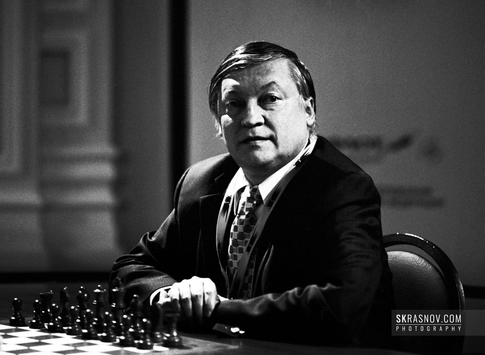

Chess is a game that has been played for centuries, and over that time, there have been many great players who have left their mark on the game. Some of these players are known for their incredible talent, while others are known for their strategic thinking and ability to outwit their opponents. In this blog post, we'll take a look at some of the most legendary players of chess and what made them so great.
Garry Kasparov
Garry Kasparov is widely considered one of the greatest chess players of all time. Born in 1963 in Baku, Azerbaijan, Kasparov became the youngest ever undisputed World Chess Champion in 1985 at the age of just 22. He held the title for 15 years, during which time he dominated the game and established himself as a true legend.
Kasparov was known for his aggressive playing style and his ability to think several moves ahead. He was a master of openings and was able to create complex strategies that left his opponents struggling to keep up. He retired from professional chess in 2005, but his legacy as one of the greatest players ever to grace the game will live on.
Anatoly Karpov
Anatoly Karpov is another legendary chess player who is often mentioned in the same breath as Kasparov. Born in 1951 in Zlatoust, Russia, Karpov became the youngest ever Soviet National Master at the age of just 15. He went on to win the World Chess Championship in 1975, a title he held for ten years.
Karpov was known for his exceptional defensive skills, and he was a master of the endgame. He was also a great strategist and was able to control the game from start to finish. Karpov retired from professional chess in 2009, but his contributions to the game will never be forgotten.
Bobby FischerBobby Fischer
Bobby Fischer is perhaps the most famous chess player of all time. Born in 1943 in Chicago, Fischer became the youngest ever United States Chess Champion at the age of just 14. He went on to win the World Chess Championship in 1972 in a historic match against Boris Spassky.
Fischer was known for his unconventional playing style and his ability to think outside the box. He was also a master of the endgame and was able to win games that seemed impossible to his opponents. Fischer retired from professional chess in 1975, but his legacy as one of the greatest players of all time continues to this day.
These are just a few of the legendary players of chess who have left their mark on the game. Each of these players was known for their unique style and approach to the game, and they all contributed in their own way to the development of chess as we know it today. Whether you're a beginner or an experienced player, studying the games of these greats can help you improve your own skills and strategy.